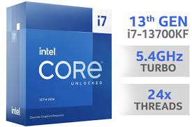
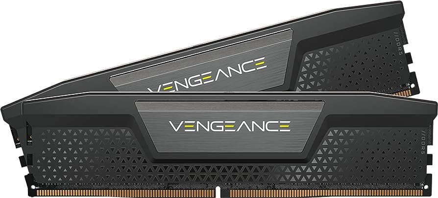
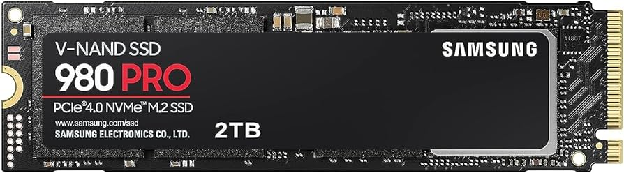
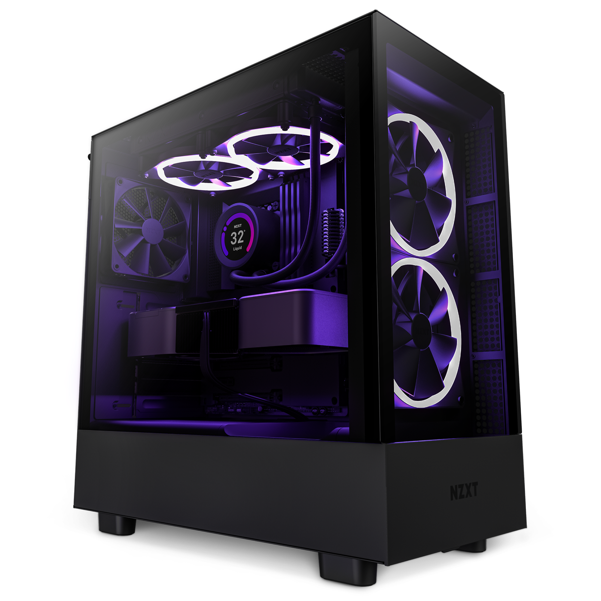
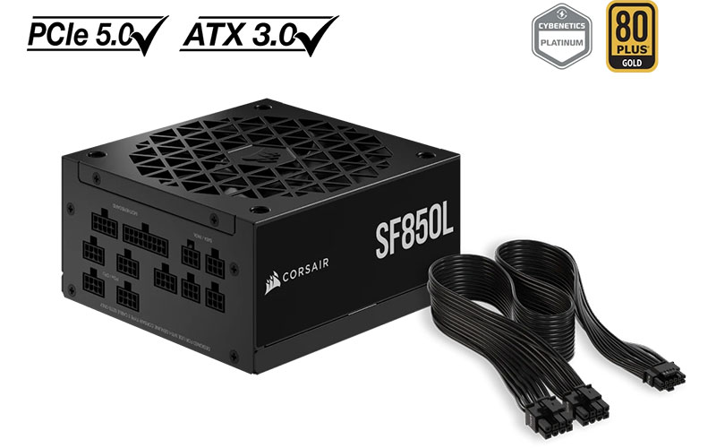
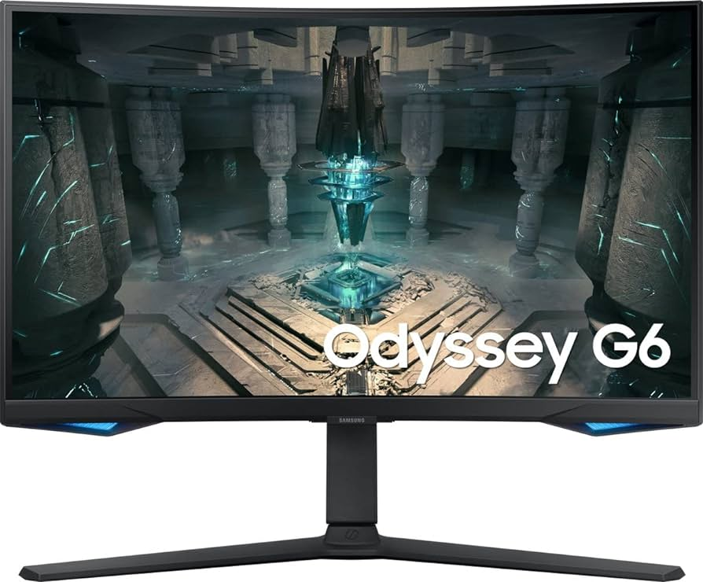

Placa base
La placa base es el componente que conecta todas las piecas del ordenador para que vayan todas a una.

Características
- Tipo de socket o zócalo: Intel® LGA 1700.
- Tipo de memoria: DDR5.
- Capacidad máxima de memoria soportada: 4 x DIMM, Max. 128GB, DDr5
- Formato: ATX
- Dispone de módulo Wi-Fi: Si
Precio
239€ en PcComponentes
Procesador
El procesador es el cerebro del sistema, procesa todo lo que ocurre en la PC. Cuanto más rápido sea el procesador que tiene una computadora, más rápidamente se ejecutarán las órdenes que se le den a la máquina.

Características
- Marca: Intel Core
- Socket: LGA 1700
- Gráficos integrados (sí/no): No
- Núcleos: 24
- Frecuencia base: 5.4 GHz
Precio
382€ en PcComponentes
Memoria RAM
La memoria RAM es la memoria principal de un dispositivo, esa donde se almacenan de forma temporal los datos de los programas que estás utilizando en este momento. Sus siglas significan Random Access Memory, es un tipo de memoria que te puedes encontrar en cualquier dispositivo.

Características
- Tipo: DDR5
- Formato: DIMM
- Capacidad: 5600 MHz
Precio
217€ en PcComponentes
Almacenamiento
El almacenamiento de datos consiste en la conservación de información, que se encuentren accesibles siempre que sean necesarios. . Las formas más frecuentes de almacenamiento de datos son el almacenamiento de disco duro ssd y hdd.

Características
- Capacidad: 2T
- Tipo de disco: ssd.
- Conector: m.2
Precio
165€ en PcComponentes
Torre
La torre. Es una carcasa de metal o plástico. En su interior se encuentran componentes que hacen que todas las otras partes cumplan su función.

Características
Precio
147€ en PcComponentes
Fuente de alimentación

Características
- Potencia: 850 W
- Formato: SFX-L
- Eficiencia: 90%
Precio
185€ en PcComponentes
Monitor

Características
- Resolución: 2560 x 1440
- Pulgadas:32
- Tipo de conexión con la placa:HDMI
Precio
457€ en PcComponentes